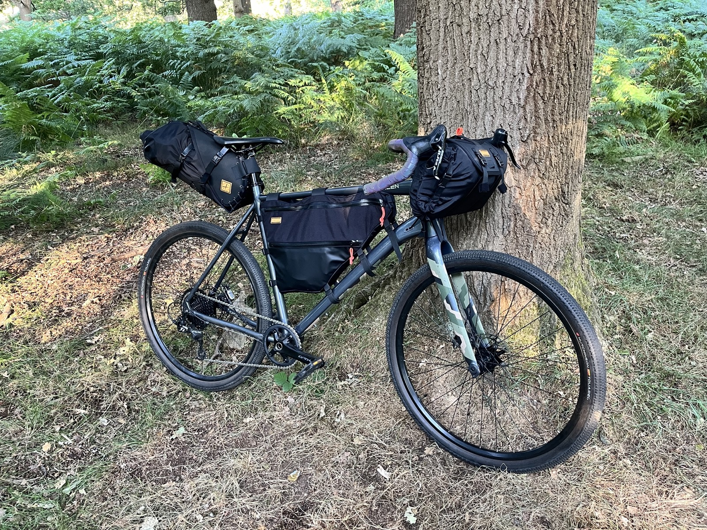
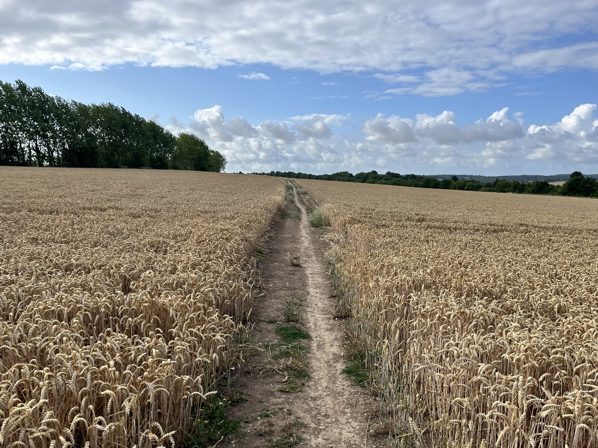
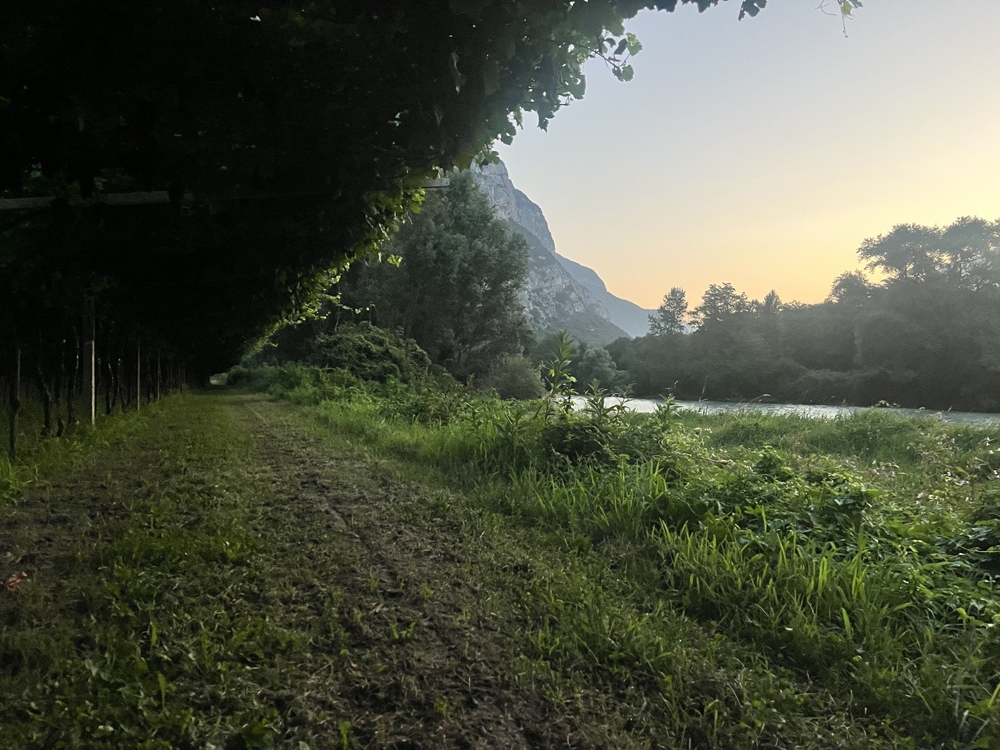
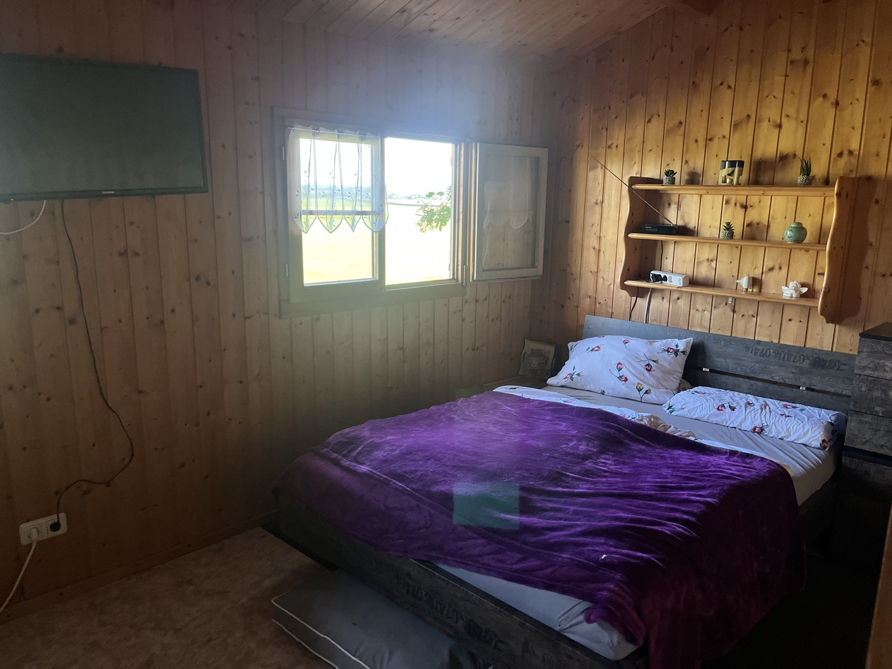
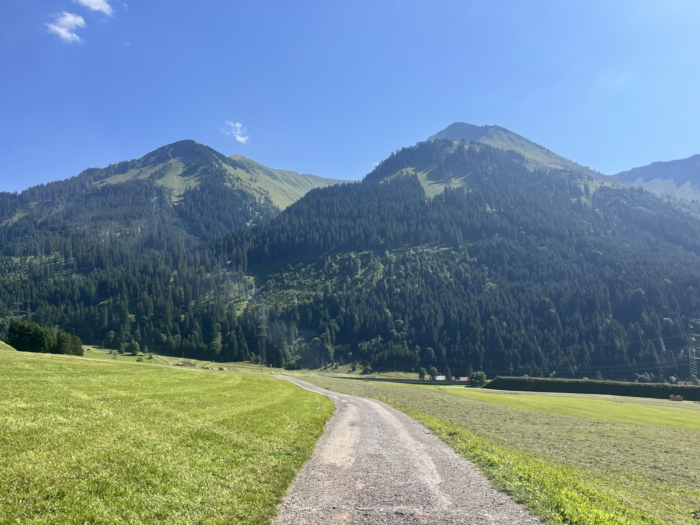
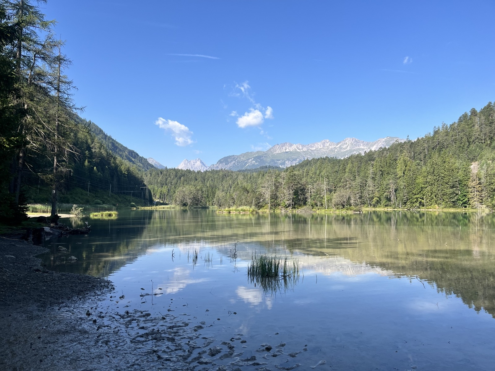
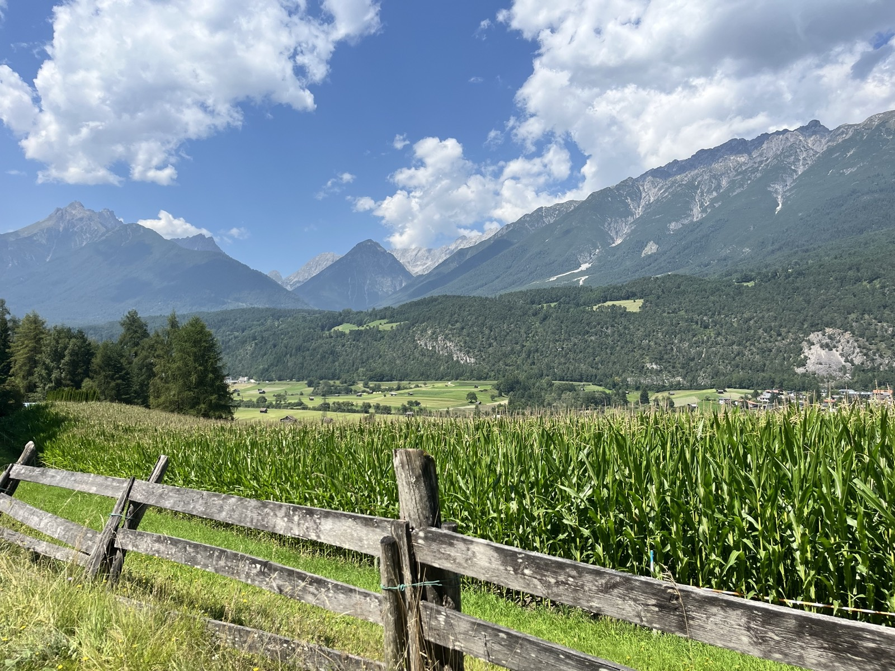
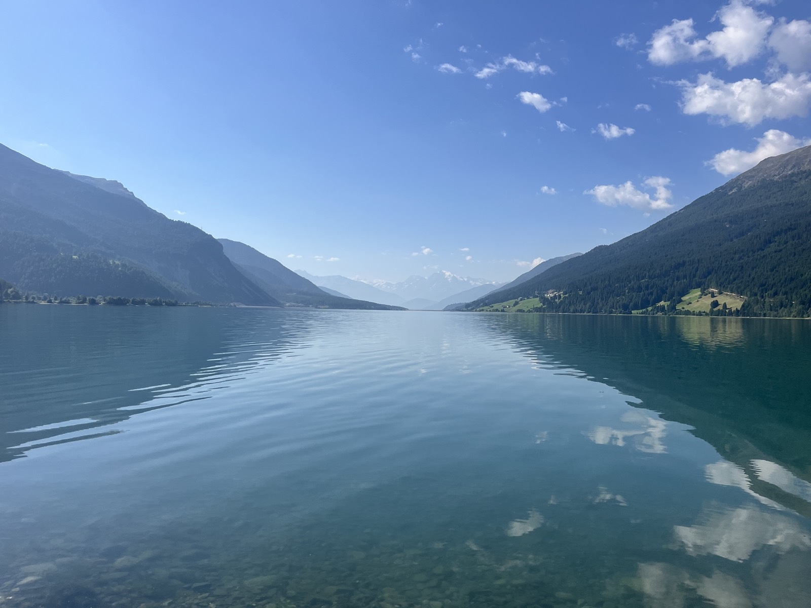
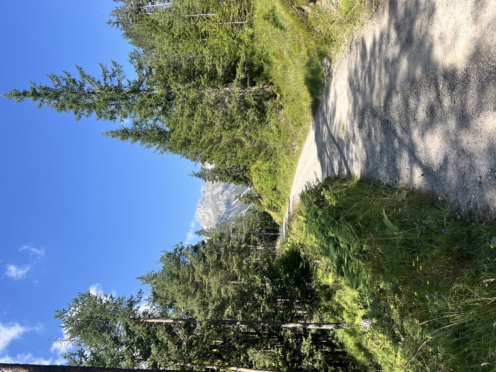

Vol. I, No. 1 • Summer 2024 • London to Verona • 1,200 km
Hey, I'm Charlie. Last summer I cycled from London, England to Verona, Italy without spending a penny on accommodation. I had no camping experience and very little cycling experience.
In this article, I'll outline how you can do the same.
"Shoot for the Moon. Even if you miss, you'll land among the stars."
Aim for the impossible. See how far you can go. The desire needs to be greater than the obstacles.
Chapter One
Check Facebook, eBay, and Gumtree every day for second-hand listings. Within 2 weeks you should find a great deal.
You need to completely trust the bike is secure.
Avoid saddle bags larger than 14L—they bend and break. The Restrap handlebar bag was excellent.
Get a handlebar navigation device. Beats stopping every 10 minutes.
The Hydrapak Seeker 4L bladder packs down small when empty. Skip water filters—just knock on doors and ask.
You're never more than 30 min from a house.
Bring a rain jacket—everything will get wet. If I went again, I'd skip the tent and use a bivy bag. Faster setup, more flexibility.
Speed means sleeping in riskier (better) spots.

Field Note: The starting setup — London, Day 1
Chapter Two
So how did I do it for free? At 5pm every day, you start knocking on doors. Not any old doors—doors of houses with a big garden.
Look for houses with big gardens—preferably with easy access from the street. Knock on the door and deliver your pitch:
"Hello, my name is Charlie, long story short I've cycled all the way from London, and I'm cycling to Verona. I'm a student so have very little money, so was wondering if there was any possibility you'd let me set up my tent in your garden."
{Pause} Just one night. {Pause} It's a very small tent. {Pause} I'll be away early in the morning.
Spend a couple hours on this.
If the garden approach doesn't work, find a nearby campsite. Use the same pitch but modify the ask:
"...let me stay here, one night, for free."
Campsite owners often have sympathy for a weary cyclist. The key is the same—smile, be cheerful, be human.
Spend an hour or so on this.
This is difficult. Most wilderness is thick forest. The trick: find the perfect spot and wait until sunset.
Cook dinner. Watch the sun set. Then lay out your bivy bag and sleeping bag. Sleep under the stars.
Nobody sees you in the dark—you never get caught.
Last resort, but often the most magical.

Field Note: The English countryside — endless green, endless rain
Chapter Three
It's a difficult adjustment to make. You're going from modern day living to caveman living. There is so much pain. When your sleeping bag is wet, when you are tired, when you are hungry, when you are nervous to knock on doors.
But every so often you stop, get off of your bike and take in the view. At that moment, it all becomes worth it.
"There's nothing like cycling 150 km in a day and then crashing into a vineyard in Italy."
There is so so much pain, but there is just as much joy. They balance one another out.

Field Note: The vineyard in Italy — 150km in, completely worth it
Think about yoga—no, seriously. I pulled my shoulder blade out of place because I was in one cycling position for too long. Keep your body stretched and healthy.
Consider vitamin pills for the journey.
Morning: 1.5L water + porridge with banana & honey
Lunch: Lidl/Aldi run—fruit, pastries, maybe chocolate
Dinner: Rice with nuts, melted cheese, soy sauce
Not Gordon Ramsay, but it works.
Chapter Four
My favourite thing about this are the stories that one creates when they take so many chances on strangers.

The guest hut — a palace after weeks of camping
Rejection after rejection. Nobody was letting me camp in their garden. In desperation, I found a campsite 45 minutes away. It was getting dark—this was not good.
While cycling there, I see some people standing in the driveway of a farmhouse. I do my thing and ask if I can camp on their land.
They speak in a South German accent. They bring the mother out, then the father. Eventually one of them says:
"Yes, or you can stay in the guest house."
It was amazing. I went from living like a caveman to living in a guest hut with heating, wifi, lights—everything. They invited me for dinner. It was incredible to see their family culture. There were lots of flies, 3 blind cats, and they all drank from the same water bottle. Above all, they acted like a family. They were close. It was beautiful.
In the morning, they left a note explaining how to use the shower and where breakfast was.
"Getting rejected from the many people beforehand was the best thing that could have happened to me."




Chapter Five
Yes, but very differently. I probably wouldn't sleep in gardens or do it caveman style. Even if I was doing it caveman style, I wouldn't bring a tent—I would bring a bivy bag instead.
While the caveman style is an achievement, it's very tough. I'm happy I did it but think there are more pleasurable ways to cycle across countries.
"But would I recommend it? 100%, you'll have some amazing stories to tell."

Field Note: The finishing setup — battle-tested and triumphant
The Final Word
If you're looking for a crazy experience, don't have much money but have a lot of time. If hearing this excites you and you are looking for an adventure—
Go for it.
Don't expect it to be easy, but I think it will be a worthwhile achievement.
Feel free to reach out to me for some guidance.
— Charlie